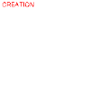
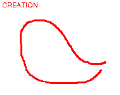
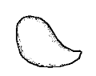
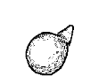
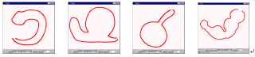

[1.Camera]
[2.Create]
[3.Paint]
[4.Extrude]
[5.Cut]
[6.Smooth]
[7.Bend]
[8.File]
Step 2: Creation
1
2
3
4
1) Press "Init" button. A blank canvas appears.
2) Draw a closed stroke on the blank canvas by the left-button dragging.
(Leave a litte space between the start and end point of the stroke.)
3) System generates a new 3D model automatically.
4) Rotate the model to examine the result
5) Go to (1) and try different models.

Example of newly created models.
You can switch to the polygonal mesh view by pressing "Style" button.
When you have practiced enough, go to
step 3.
If the program works strangely, close the applet window and
restart the applet.
Copyright (C) 1998
Takeo Igarashi